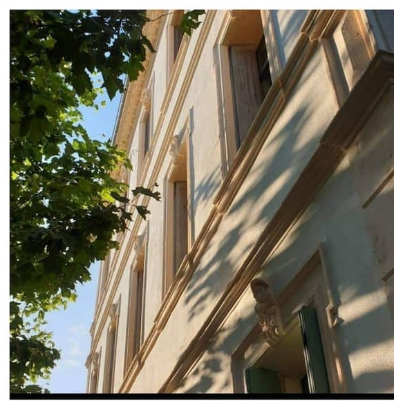

Boendet
Ett hem att komma till



En 1800-talsvåning mitt i en by där saltängarna glittrar rosa av flamingor och doften av garrigue följer er hela vägen till lagunen. 200 meter till butikerna, en egen skuggad trädgård att komma hem till.
Manoir d'Aude är en helrenoverad familjegård mitt i den charmiga byn Peyriac-de-Mer. Emeraude-lägenheten kombinerar gamla och moderna stilar på husets första våning — perfekt för att komma och koppla av, njuta av landskapet vid lagunen och upptäcka Corbières Maritimes i lugn takt. Aude, Brigitte och Eric välkomnar er som sina egna gäster.
Vi hade en mycket trevlig vistelse. Lägenheten är välmöblerad, bekväm och utrustad med allt som behövs för en avkopplande semester. Uteplatsen är ett riktigt plus och erbjuder ett trevligt område för att koppla av.— Ioana Raluca, gäst via Airbnb
Byn ligger mitt i Parc naturel régional de la Narbonnaise, omgiven av lagunerna vid Corbières Maritimes. Här är vad som finns runt knuten.
Le Manoir d'Aude bokas idag via Airbnb, direkt hos Aude, Brigitte och Eric.
Fler bokningsvägar — Booking.com och direktbokning med synkad kalender — är på gång.